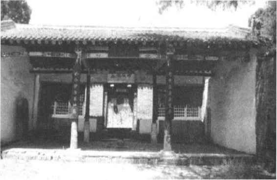

宋朝学者着重钻研儒家的义理，探讨所谓“孔颜乐处”，人们称之为义理性命之学，简称性理之学或理学。理学实际是儒释道三家合流在更高层次上的发展。由于理学家们继承了韩愈的“道统论”，于是又称其为道学，称那些著名的理学家为道学先生。理学的发端者是北宋的周敦颐，以后发展为两派：
一派是北宋的周敦颐、程颐等，至南宋的朱熹为集大成者。他们认为，在天地万物产生以前就存在着“天理”，它是自然和人事命运的主宰。他们属于客观唯心主义理学。
另一派是北宋的邵雍、程颢，至南宋的陆九渊总其成。他们主张“天理”就在人的心中，因此“宇宙即是吾心，吾心便是宇宙”［26］。他们属于主观唯心主义理学，又被称为“心学”。
这两派都认为是人的私欲蒙蔽了人的善良本性，因此都提出“存天理，弃人欲”或“存心去欲”的口号。南宋朱熹建立了一套比较完整的客观唯心主义理学体系。什么是理？朱熹解释说：“未有天地之先，毕竟也只是理，有此理，便有此天地。若无此理，便亦无天地，无人无物，都无该载了。有理便有气，流行发育万物。”［27］显然他所说的“理”，是产生万物的本源，是离开事物而能独立存在的一种什么东西，是自然界和人类社会的主宰。朱熹还把所谓永恒的理引申到封建道德范畴中，借以大肆宣扬封建的“三纲五常”思想。所谓三纲五常，即君为臣纲、父为子纲、夫为妻纲，以及仁、义、礼、智、信。朱熹说：“仁莫大于父子，义莫大于君臣，是谓三纲之要，五常之本，人伦天理之至，无所逃于天地之间。”［28］朱熹把这些封建伦常说成是天理，是先天就有的。他说，“未有这事，先有这理，如未有君臣先已有君臣之理；未有父子已先有父子之理”，“直待有了君臣父子，却旋将这道理入在里面”。［29］这种说法似是而非。一种事物的内在性质和规律性总是同这事物同时存在的，不可能先有事物的性质，然后才产生出事物本身。朱熹还进而把天理同人性、人欲联系在一起。他认为具有封建的伦常是人的本性，有的人所以有“不善”的表现，是由于被人的欲望所蒙蔽。因此人们必须放弃私欲，服从天理。朱熹于是提出“存天理，弃人欲”的号召，要求人们都必须遵守封建伦理纲常，听命于封建统治。朱熹运用这些理学思想去阐释儒家经典，著作除《四书章句集注》外，还有《周易本义》、《诗集传》等，被后世封建统治者提到儒学正宗的地位。
除了以朱熹为代表的客观唯心主义理学体系外，还有南宋陆九渊为代表的“心学”。陆九渊把思孟学派的主观唯心主义同佛教禅宗的某些思想结合起来，提出“心即理”之说。他认为天理、人理、物理只在人的心中，主张“心”和“理”是永久不变的，以此证明一切封建的道德教条都是人心所固有的，是永恒不变的。他还认为，人们要了解、认识客观事物，只要悟得本心就可以了，甚至连书都不必多读。于是提出“六经皆我注脚”［30］。意思是，六经注解了我的本性，而不是我学六经。为了维护封建的伦理道德，陆九渊号召人们“存心”而“去欲”，反对人民为改善受压迫的处境去同封建统治者进行斗争。陆九渊的理学思想虽然同朱熹有很大分歧，但它们在本质上是一致的，都是把封建的伦常道德尊为天理，为封建统治提供理论根据。由于程颢、程颐兄弟在理学上取得了显著成就，人们又把宋代理学称为“程朱理学”。（图9—18）

图9-18 河南伊川二程祠庙
中国封建社会发展到宋朝，城市经济以及商品交换得到发展，这些新的因素必然会冲击传统的封建制度和思想意识。这时统治阶级就需要更严密、更具有欺骗性的思想理论来控制人民的言行，维护旧的秩序、思想的稳定。宋代理学的纲常伦理思想可以更有力地维护封建社会那套严格的贵贱尊卑的等级制度、钳制人民的思想，因此这时宣扬忠孝节义的义理性命之学便得以发展起来，后世也称它为程朱理学。宋代以后，理学也受到明、清封建统治者的大力提倡，成为中国封建社会后期儒学的正统思想。
封建统治者为了强化文化思想的专制，他们不仅要借助于儒学，而且也要利用佛家、道家来麻醉被统治者。在宋代的理学中，朱熹讲“弃人欲”与佛教的禁欲主义有相通之处；周敦颐说太极是从“无”产生的，与道家的“有生于无”思想也是吻合的，他的太极图就是从道教那里学来的；佛教、道教宣扬的“行善”内容，又都与儒家的仁义、天命思想相合拍。这些都表明，儒、释、道三家的相互融合、渗透，在宋代已经发展到了一个新的高度。所以建于五代、宋朝的四川大足石窟中，就出现了佛、道、儒三家教主释迦牟尼、老子、孔子造像同时供奉在一窟中的现象，正是三家合流的形象表现。这种现象，在中国其他的一些寺庙中也可见到。在中国人的文化心理上，感到三家都是教人为善，因此并不矛盾。所以，《红楼梦》中的贾宝玉平时要读儒家的四书五经，参加科举考试；又和妙玉、黛玉等学佛家参禅；心中不快时，又手持《南华经》（即《庄子》）读了起来，想从道家那里获得解脱。读者对此也都觉得合乎情理。